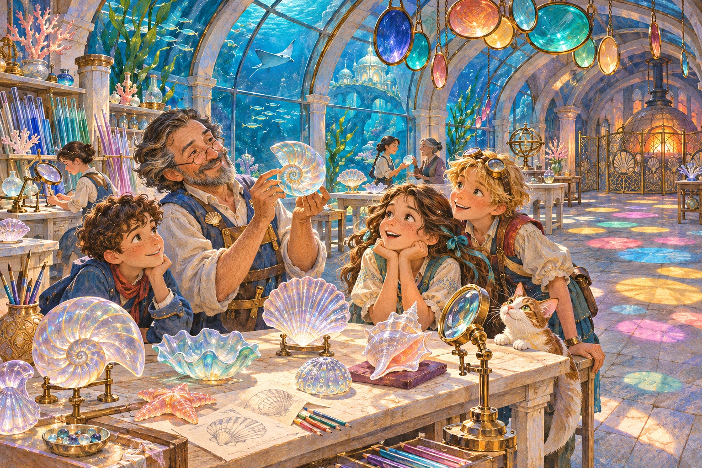

Куда дальше пойдёт общий голос
Каждый вариант требует хранителей, времени и ясных правил. Дополните или предложите свой.

Открытый музей
Оригинал остаётся в музее. Нужны доступные часы, тихое место и тактильные копии.

Путешествующая выставка
Община сохраняет владение. Нужны согласованный маршрут, проверка перевозки и право квартала перенести визит.

Копии для кварталов
Оригинал хранится бережно; подписанные копии и разрешённые записи доходят до соседей.

Время подумать
Спорный предмет хранится безопасно до следующей встречи. Назовите дату, открытые вопросы и того, кто соберёт ответы.
Выберите предложение; несогласие можно записать отдельно.